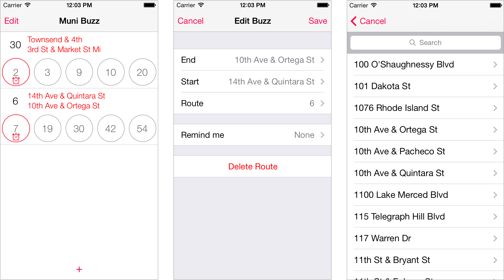

headline text: 3x body copy size sub headline text: 1.5x body copy size footer: .75x body copy size font size: 16px - 24px line height 1.5x leading: 120-150% of body copy size characters per line: 50-70 To make the postcard intriguing and demand reader attention, I used asymmetr7 with large image on the left and balance that with grid and density on the right.